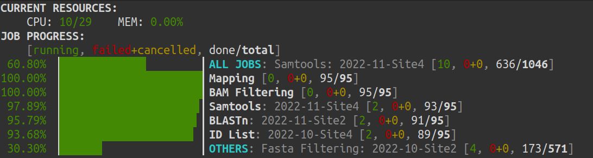

JobSchedulers.jl
Why JobScheduler?
We may find different tasks or programs use different CPU and memory. Some can run simultaneously, but some have to run sequentially. JobScheduler is stable, useful and powerful for task queuing and workload management, inspired by Slurm/PBS and Crontab.
Package Features
Job and task scheduler.
Local workload manager.
Support CPU, memory, run time management.
Support running a job at specific time, or a period after creating (schedule).
Support recurring/repetitive jobs using Cron-like schedule expressions.
Support deferring a job until specific jobs reach specific states (dependency).
Support automatic backup and reload.
Fancy progress meter in terminal.

Installation
JobSchedulers.jl can be installed using the Julia package manager. From the Julia REPL, type ] to enter the Pkg REPL mode and run
pkg> add JobSchedulersTo use the package, type
using JobSchedulersVideo
This work was presented at JuliaCon 2023 as "J Chuan, X Li. Pipelines & JobSchedulers for Computational Workflow Development."
You can watch the presentation here: